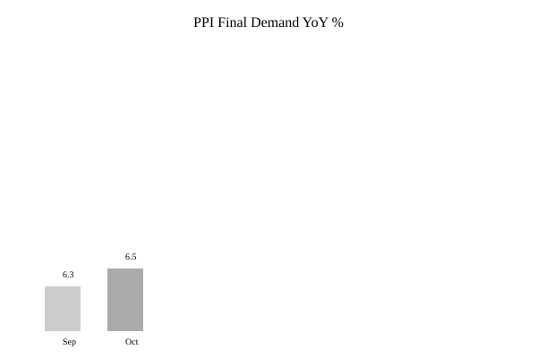

Washington · Economics · 13 November 2026
Producer Price Index for final demand rose 0.3 percent in October; 6.5 percent over twelve months
ObjectiveNews. Target T 100 · N 0 · C 100.

The U.S. Bureau of Labor Statistics reported on 13 November that the Producer Price Index for final demand increased 0.3 percent in October, seasonally adjusted. This followed a revised 1.4 percent advance in September. On an unadjusted basis the index rose 6.5 percent for the twelve months ended in October, the largest twelve-month increase since November 2022. Prices for final demand goods rose 0.5 percent, led by goods less foods and energy; final demand foods increased 1.3 percent while energy edged down 0.1 percent. Services rose 0.2 percent. The index for final demand less foods, energy and trade services rose 0.5 percent. These figures are the official statistical release. Market participants continued to price a Federal Reserve rate increase at the December meeting. The data measure prices received by domestic producers and do not directly equal consumer inflation.

Source articles and scores
| Outlet | Headline | T | N | C |
|---|---|---|---|---|
| BLS | Producer Price Indexes – October 2026 | 100 | 0 | 100 |
| Reuters | US producer prices rise further in October | 96 | 0 | 100 |
Image credit: type industrial; local SVG and chart committed.